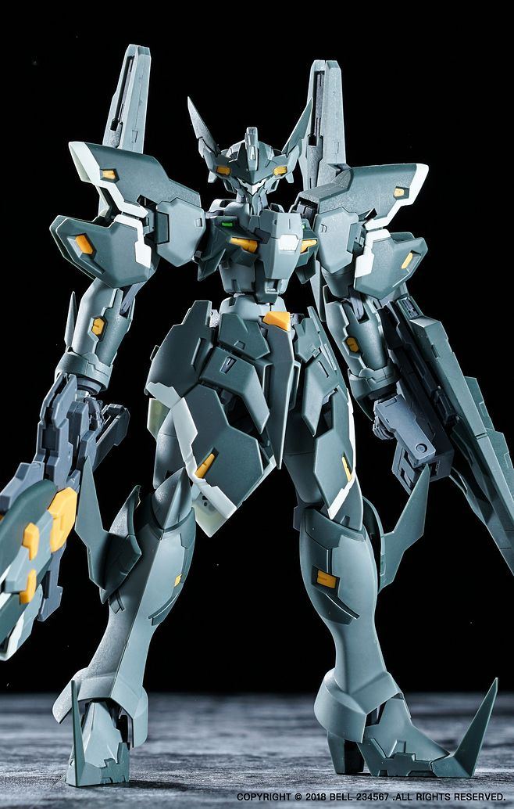
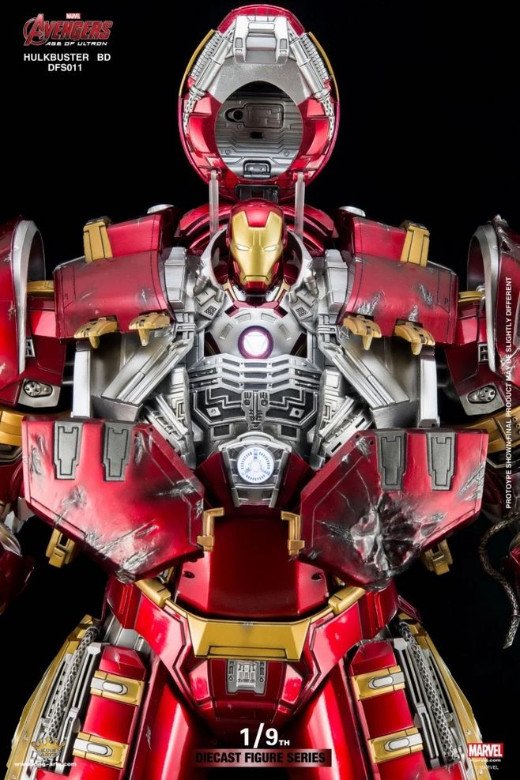
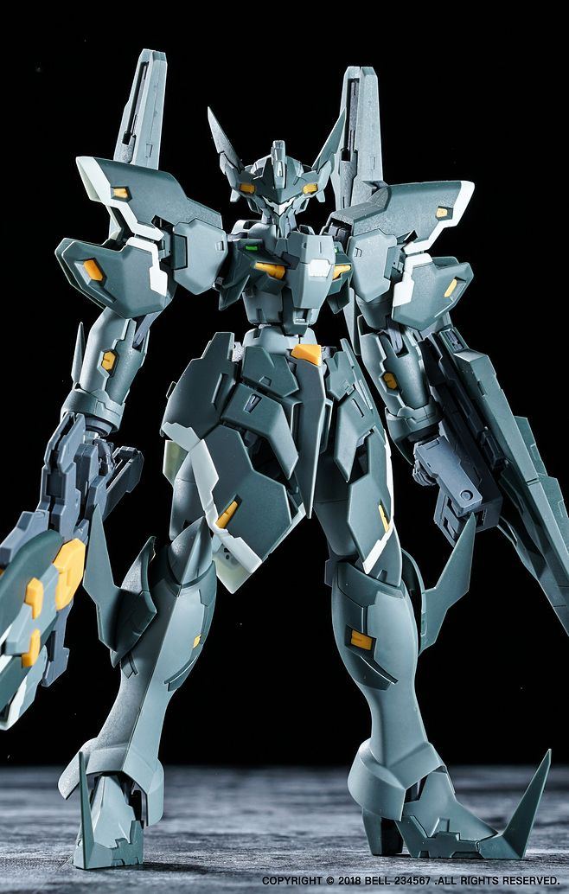
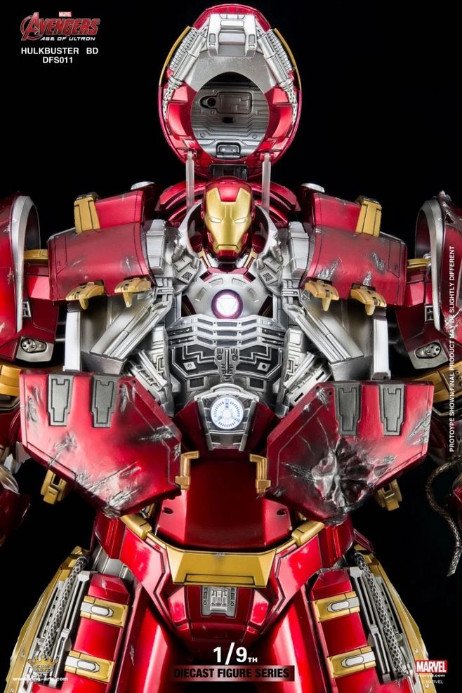

机甲，意即是“机械动力装甲”，一般出现在科幻或超现实的影视、游戏和小说文，现实中也有人尝试创作这类科技。原意中的机甲一词基本指的是类似于《钢铁侠》的动力服，但随着日本 ACG作品的影响，现今有大多数人对机甲的印象都是由人类操作的大型 机器人,一般定义为战争兵器，例如我们熟知的高达。
机甲的系统为：内外核心系统，十项末端系统。这些系统合并总称为“机甲”。 能源系统，传动系统，骨架系统，装甲系统，武器系统， 插件系统，感知系统，总控系统，操控系统，维生系统。
 


